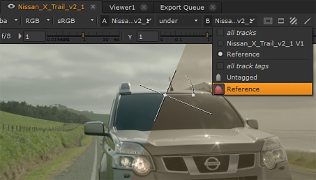
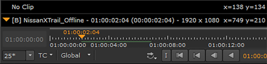

The Viewer A/B tools allow you to quickly compare media using the two Viewer input buffers. Select a clip, sequence, clip instance or track and press 1 or 2 to place your selection in the Viewer input buffers. You can also drag-and-drop items into the input buffers using the Viewer hotspots.
NOTE: The Viewer currently treats all alpha channels as premultiplied, which can result in the Viewer background being “added” to the image. If you’re working with un-premultiplied images, set the Viewer background to Black. See Appendix A: Preferences for more information.
When the Viewer input buffers contain sequences, the A and B dropdowns control what is displayed in the Viewer using track names and tags. Selecting a track or tag from the dropdown displays the selected media in the Viewer.

Use the wipe, stack, horizontal, and vertical modes to control how the buffers are displayed in the Viewer.
NOTE: If you're working in a multi-view project, using stereo footage for example, you can set which view is output in the A and B buffers using the Views buttons over the Viewer. See Displaying Views in the Viewer for more information.
The wipe and stack modes also allow you to blend the two buffers together, and in the case of wipe mode, provides a handle in the Viewer to quickly wipe between the two inputs.
The color picker overlay  displays a description of the contents of the A and B inputs, or No Clip when there is no clip at the playhead, for instance, when there is a gap in a timeline or if a track is disabled.
displays a description of the contents of the A and B inputs, or No Clip when there is no clip at the playhead, for instance, when there is a gap in a timeline or if a track is disabled.

The orange triangle in the overlay denotes the clip currently supplying audio and timecode information in the Viewer.
|
|